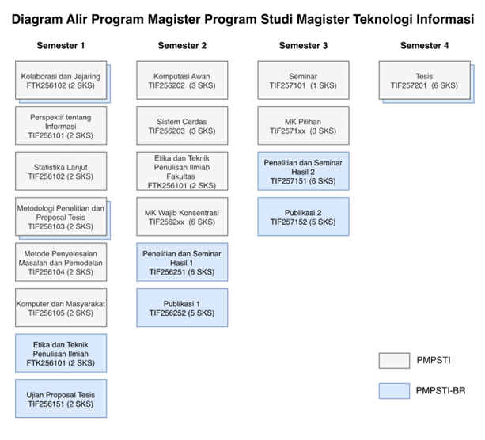

11 Penetapan Mata Kuliah
11.1 Penetapan Mata Kuliah
Kurikulum PMPSTI versi Revisi-2 terdiri dari dua skema yaitu skema berbasis perkuliahan dan skema berbasis riset. Skema berbasis perkuliahan merupakan skema yang telah dijalankan selama ini, sedangkan kurikulum berbasis riset merupakan skema baru sesuai dengan Peraturan Rektor UGM No. 18 Tahun 2019.
11.1.1 Kurikulum berbasis perkuliahan (by course)
Kurikulum PMPSTI berbasis perkuliahan dijabarkan dalam bentuk mata kuliah dengan bobot keseluruhan 36 SKS yang terdiri dari MK wajib umum, MK wajib konsentrasi, MK pilihan, seminar, dan Tesis. Pembagian bobot SKS dapat dilihat pada Tabel 2.4
| Mata Kuliah | SKS |
| MK Wajib Umum | 20 |
| MK Wajib Konsentrasi | 6 |
| MK Pilihan | 3 |
| Seminar | 1 |
| Tesis + Ujian Tesis | 6 |
| Total | 36 |
Struktur mata kuliah pada setiap semester ditunjukkan pada Tabel 2.5 dengan total bobot 36 SKS.
| NO | KODE MK | NAMA MK | SIFAT | SKS |
| SEMESTER 1 | ||||
| 1 | FTK 256102 | Kolaborasi dan jejaring | Wajib Umum | 2 |
| 2 | TIF 256101 | Perspektif tentang Informasi | Wajib Umum | 2 |
| 3 | TIF 256102 | Statistika Lanjut | Wajib Umum | 2 |
| 4 | TIF 256103 | Metodologi Penelitian dan Proposal Tesis | Wajib Umum | 2 |
| 5 | TIF 256104 | Metode Penyelesaian Masalah dan Pemodelan | Wajib Umum | 2 |
| 6 | TIF 256105 | Komputer dan Masyarakat | Wajib Umum | 2 |
| JUMLAH SKS | 12 | |||
| SEMESTER 2 | ||||
| 1 | TIF 256202 | Komputasi Awan | Wajib Umum | 3 |
| 2 | TIF 256203 | Sistem Cerdas | Wajib Umum | 3 |
| 3 | FTK 256101 | Etika dan Teknik Penulisan Ilmiah | Wajib Umum | 2 |
| 4 | TIF 2562xx | MK Wajib Konsentrasi 1 | Wajib Konsentrasi | 3 |
| 5 | TIF 2562xx | MK Wajib Konsentrasi 2 | Wajib Konsentrasi | 3 |
| JUMLAH SKS | 14 | |||
| SEMESTER 3 | ||||
| 1 | TIF 257101 | Seminar | Seminar | 1 |
| 2 | TIF 2571xx | MK Pilihan 1 | Pilihan | 3 |
| JUMLAH SKS | 4 | |||
| SEMESTER 4 | ||||
| 1 | TIF 257201 | Tesis | Tesis | 6 |
| JUMLAH SKS | 6 | |||
| TOTAL | 36 |
Kurikulum PMPSTI memiliki 4 konsentrasi sebagaimana berdasarkan bahan kajian di atas dan masukan dari advisory board dan pengguna lulusan, yaitu:
Konsentrasi Analisis data dan kecerdasan Tersebar (Data analytics and Pervasive Intelligence = DAPI)
Konsentrasi Rekayasa Perangkat Lunak berpusat pada Manusia (Human-centered Software Engineering = HcSE)
Konsentrasi Pemerintahan Cerdas (Smart Government = SG)
Konsentrasi Keamanan Jaringan (Network and Cybersecurity = NC)
Mahasiswa PMPSTI wajib memilih satu dari empat konsentrasi yang ada. Pada semester kedua mahasiswa diwajibkan mengambil 2 mata kuliah wajib konsentrasi dengan total bobot 6 SKS, kemudian pada semester berikutnya mahasiswa akan mengambil 1 mata kuliah pilihan konsentrasi dengan total bobot 3 SKS, sesuai dengan struktur pada Tabel 2.5. Adapun mata kuliah wajib konsentrasi dan pilihan konsentrasi ditunjukkan pada Tabel 2.6 dan Tabel 2.7. PMPSTI menawarkan 6 mata kuliah pilihan untuk masing-masing konsentrasi, bergantung pada konsentrasi yang dipilih mahasiswa. Namun, hanya mata kuliah dengan jumlah minimum 3 peserta yang akan diselenggarakan.
| No. | Kode MK | Nama Mata Kuliah | SKS | Sifat |
| 1 | TIF 256211 | Gudang dan Penambangan Data (Data Warehouse and Data Mining) | 3 | Wajib Konsentrasi DAPI |
| 2 | TIF 256212 | Komputasi Tersebar (Pervasive Computing) | 3 | Wajib Konsentrasi DAPI |
| 3 | TIF 256221 | Rekayasa Kebutuhan (Requirement Engineering) | 3 | Wajib Konsentrasi HcSE |
| 4 | TIF 256222 | Arsitektur dan Perancangan Perangkat Lunak (Software Architecture and Design) | 3 | Wajib Konsentrasi HcSE |
| 5 | TIF 256231 | Pengelolaan Data untuk Pemerintahan (Data Management for Government) | 3 | Wajib Konsentrasi SG |
| 6 | TIF 256232 | Pemerintahan Elektronik (e-Government) | 3 | Wajib Konsentrasi SG |
| 7 | TIF 256241 | Keamanan Teknologi Informasi (Information Technology Security) | 3 | Wajib Konsentrasi NC |
| 8 | TIF 256242 | Jaringan komputer lanjut (Advanced computer network) | 3 | Wajib Konsentrasi NC |
| No. | Kode MK | Nama Mata Kuliah | SKS | Sifat |
|---|---|---|---|---|
| 1 | TIF 257111 | Interoperabilitas Lanjut (Advanced Interoperability) | 3 | Pilihan DAPI |
| 2 | TIF 257112 | Jaringan Nirkabel dan Bergerak (Wireless and Mobile Networking) | 3 | Pilihan DAPI |
| 3 | TIF 257113 | Visi Komputer (Computer Vision) | 3 | Pilihan DAPI |
| 4 | TIF 257114 | Operasi Riset (Research Operation) | 3 | Pilihan DAPI |
| 5 | TIF 257115 | Kecerdasan Bisnis (Business Intelligence) | 3 | Pilihan DAPI |
| 6 | TIF 257116 | Pengembangan Aplikasi Peranti Bergerak Lanjut (Advanced Mobile Application Development) | 3 | Pilihan DAPI |
| 7 | TIF 257121 | Interaksi Manusia dan Komputer Lanjut (Advanced Human-Computer Interaction) | 3 | Pilihan HcSE |
| 8 | TIF 257122 | Antar Muka Alamiah (Natural User Interface) | 3 | Pilihan HcSE |
| 9 | TIF 257123 | Rekayasa Faktor Manusia dan Ergonomi (Human Factor Engineeringand Ergonomics) | 3 | Pilihan HcSE |
| 10 | TIF 257124 | Pengujian dan Implementasi Perangkat Lunak (Software Testing and Implementation) | 3 | Pilihan HcSE |
| 11 | TIF 257125 | Pemodelan Sistem dan Perangkat Lunak (System and Software Modelling) | 3 | Pilihan HcSE |
| 12 | TIF 257126 | Aplikasi Kontemporer (Contemporary Application) | 3 | Pilihan HcSE |
| 13 | TIF 257131 | Perencanaan Strategis Teknologi Informasi (IT Strategic Planning) | 3 | Pilihan SG |
| 14 | TIF 257132 | Manajemen Proyek Teknologi Informasi (IT Project Management) | 3 | Pilihan SG |
| 15 | TIF 257133 | Audit Teknologi Informasi (Audit of Information Technology) | 3 | Pilihan SG |
| 16 | TIF 257134 | Kepemimpinan TIK (IT leadership) | 3 | Pilihan SG |
| 17 | TIF 257135 | Teknologi untuk Kota Cerdas (Technology for Smart City) | 3 | Pilihan SG |
| 18 | TIF 257136 | Manajemen Perubahan dan Resiko TI (IT Change and Risk Management) | 3 | Pilihan SG |
| 19 | TIF 257141 | Keamanan dan Integritas Data Lanjut (Advanced Data Security and Integrity) | 3 | Pilihan NC |
| 20 | TIF 257142 | Keamanan Jaringan Komputer (Network security) | 3 | Pilihan NC |
| 21 | TIF 257143 | Keamanan Peranti Bergerak dan IoT (Mobile and IoT security) | 3 | Pilihan NC |
| 22 | TIF 257144 | Keamanan Komputasi Awan (Cloud Security) | 3 | Pilihan NC |
| 23 | TIF 257145 | Kriptografi (Cryptography) | 3 | Pilihan NC |
| 24 | TIF 257146 | Teknologi Blockchain (Blockchain Technology) | 3 | Pilihan NC |
11.1.1.1 Peta Kurikulum
Tabel 2.8 menampilkan pemetaan dari semua mata kuliah dari kurikulum 2022 Versi Revisi - 2 ke CPL.
| Sem | Kode | Nama MK ID | SKS | Capaian Pembelajaran Lulusan (CPL) |
|---|---|---|---|---|
| 1 | 2 | 3 | 4 | 5 |
| 1 | FTK256102 | Kolaborasi dan jejaring (Collaboration and Networking) | 2 | ✓ |
| 1 | TIF 256101 | Perspektif Informasi/ Perspectives on Informtion | 2 | ✓ |
| 1 | TIF 256102 | Statistika Lanjut/ Advanced Statistics | 2 | ✓ |
| 1 | TIF 256103 | Metodologi, Etika Penelitian dan Proposal Tesis | 2 | ✓ |
| 1 | TIF 256104 | Metode Penyelesaian Masalah dan Pemodelan/ Problem Solving Methods and Modelling | 2 | |
| 1 | TIF 256105 | Komputer dan Masyarakat/ Computer and Society | 2 | ✓ |
| 2 | FTK256101 | Etika dan Teknik Penulisan Ilmiah | 2 | ✓ |
| 2 | TIF 256202 | Komputasi Awan/ Cloud Computing | 3 | ✓ |
| 2 | TIF 256203 | Sistem Cerdas/ Intelligent System | 3 | ✓ |
| 2 | TIF 256211 | Gudang dan Penambangan Data/ Data Warehouse and Data Mining | 3 | |
| 2 | TIF 256212 | Komputasi Tersebar/ Pervasive Computing | 3 | ✓ |
| 2 | TIF 256221 | Rekayasa Kebutuhan/ Requirements Engineering | 3 | |
| 2 | TIF 256222 | Arsitektur dan Perancangan Perangkat Lunak / Software Architecture and Design | 3 | |
| 2 | TIF 256231 | Pengolahan Data Untuk Pemerintahan/ Government Data Processing | 3 | ✓ |
| 2 | TIF 256232 | Pemerintahan Elektronis/ E-Government | 3 | |
| 2 | TIF 256241 | Keamanan Teknologi Informasi/ Information Technology Security | 3 | ✓ |
| 2 | TIF 256242 | Jaringan Komputer Lanjut/ Advanced Computer Network | 3 | |
| 3 | TIF 257101 | Seminar | 1 | |
| 3 | TIF 257111 | Interoperabilitas Lanjut/ Advanced Interoperability | 3 | |
| 3 | TIF 257112 | Jaringan Nirkabel dan Bergerak/ Wireless and Mobile Networking | 3 | ✓ |
| 3 | TIF 257113 | Visi Komputer/ Computer Vision | 3 | ✓ |
| 3 | TIF 257114 | Operasi Riset/ Research Operation | 3 | ✓ |
| 3 | TIF 257115 | Kecerdasan Bisnis/ Business Intelligence | 3 | |
| 3 | TIF 257116 | Pengembangan Aplikasi Peranti Bergerak Lanjut/ Advanced Mobile Application Development | 3 | |
| 3 | TIF 257121 | Interaksi Manusia Dan Komputer Lanjut/ Advanced Human-Computer Interaction | 3 | ✓ |
| 3 | TIF 257122 | Antar Muka Alamia/ Natural User Interface | 3 | ✓ |
| 3 | TIF 257123 | Rekayasa Faktor Manusia Dan Ergonomi/ Human Factor Engineering And Ergonomics | 3 | ✓ |
| 3 | TIF 257124 | Pengujian dan Implementasi Perangkat Lunak/ Software Testing and Implementation | 3 | |
| 3 | TIF 257125 | System and Software Modelling/ Pemodelan Sistem dan Perangkat Lunak | 3 | |
| 3 | TIF 257126 | Aplikasi Kontemporer/ Contemporary Application | 3 | |
| 3 | TIF 257131 | Perencanaan Strategis Teknologi Informasi/ IT Strategic Planning | 3 | ✓ |
| 3 | TIF 257132 | Manajemen Proyek Teknologi Informasi/ IT Project Management | 3 | |
| 3 | TIF 257133 | Audit Teknologi Informasi/ Audit of Information Technology | 3 | ✓ |
| 3 | TIF 257134 | Kepemimpinan TIK/ IT Leadership | 3 | ✓ |
| 3 | TIF 257135 | Teknologi Kota Cerdas/ Technology for Smart Cities | 3 | |
| 3 | TIF 257136 | Manajemen Perubahan dan Risiko TI/ Change Management and IT Risk | 3 | |
| 3 | TIF 257141 | Keamanan dan Integritas Data Lanjut/ Advanced Data Security and Integrity | 3 | ✓ |
| 3 | TIF 257142 | Keamanan Jaringan Komputer/ Network Security | 3 | ✓ |
| 3 | TIF 257143 | Keamanan Peranti Bergerak dan IoT/ Mobile and IoT Security | 3 | |
| 3 | TIF 257144 | Keamanan Komputasi Awan/ Cloud Security | 3 | |
| 3 | TIF 257145 | Kriptografi/ Cryptography | 3 | ✓ |
| 3 | TIF 257146 | Teknology Blockchain/ Blockchain Technology | 3 | ✓ |
| 4 | TIF 257201 | Tesis | 6 |
11.1.1.2 Mekanisme Pelaksanaan Tesis:
Tesis (6 SKS) dilaksanakan pada semester 4, yaitu sesudah mahasiswa dinyatakan lolos pada penilaian Publikasi dengan keterangan sebagai berikut.
Mahasiswa diwajibkan menyusun Naskah Tesis sebagai laporan penelitian Tesis sebagai syarat untuk pelaksanaan Ujian Tesis. Naskah Tesis harus disetujui dan ditandatangani oleh semua dosen pembimbing.
Ujian Pra Tesis (1 SKS) dilakukan pada semester 4. Berikut adalah rincian pelaksanaannya:
Naskah Tesis yang sudah disetujui tim pembimbing harus diserahkan ke bagian akademik.
Ujian Pra Tesis dilaksanakan secara lisan di hadapan dewan penguji.
Dewan penguji terdiri atas dosen-dosen Program Magister Program Studi Teknologi Informasi yang sesuai bidangnya.
Dewan Penguji memberi nilai pada sidang Ujian Pra Tesis. Jika nilai kurang dari B, maka mahasiswa wajib mengulang Ujian Pra Tesis.
- Ujian Tesis yang memiliki bobot 4 SKS dijadwalkan untuk dilaksanakan pada semester keempat. Berikut merupakan rincian pelaksanaannya secara lebih mendetail:
Naskah Tesis yang sudah direvisi berdasarkan masukan-masukan pada ujian pra Tesis dan sudah disetujui oleh tim pembimbing harus diserahkan ke bagian akademik.
Ujian Tesis dilaksanakan secara lisan di hadapan dewan penguji.
Dewan penguji terdiri atas dosen-dosen Program Magister Program Studi Teknologi Informasi dan/atau penguji dari luar Prodi yang sesuai bidangnya.
Dewan Penguji memberi nilai pada sidang Ujian Tesis bedasarkan Naskah dan ujian lisan. Jika nilai kurang dari B, maka mahasiswa wajib mengulang Ujian Tesis.
- Naskah Tesis hasil revisi berdasarkan masukan dewan penguji Tesis akan dinilai oleh Dosen Pembimbing Tesis dengan bobot 1 SKS.
11.1.2 Kurikulum berbasis riset (By Research)
Kurikulum PMPSTI-BR dijabarkan dalam bentuk mata kuliah dengan bobot keseluruhan 36 SKS. Pembagian bobot SKS dapat dilihat pada Tabel 2.9. Sedangkan pemetaan mata kuliah PMPSTI-BR terhadap CPL untuk setiap semesternya terdapat pada Tabel 2.10. Komposisi kegiatan perkuliahan dan penelitian didasarkan pada Peraturan Rektor UGM No. 18 Tahun 2019 tentang Penyelenggaraan Program Pascasarjana Berbasis Riset.
| Mata Kuliah Wajib | SKS | Kegiatan |
| - Metodologi, Etika Penelitian dan Proposal Tesis | 2 | Perkuliahan |
| - Kolaborasi dan jejaring (Collaboration and Networking) | 2 | Perkuliahan |
|
2 | Perkuliahan |
| Sub total | 6 SKS | |
| Mata Kuliah Penelitian | SKS | Kegiatan |
| - Ujian Proposal Tesis | 2 | Penelitian |
| - Penelitian dan Seminar Hasil 1 (DAPI, HcSE, SG, NC) | 6 | Penelitian |
| - Publikasi 1 | 5 | Penelitian |
| - Penelitian dan Seminar Hasil 2 (DAPI, HcSE, SG, NC) | 6 | Penelitian |
| - Publikasi 2 | 5 | Penelitian |
| - Tesis MBR | 6 | Penelitian |
| Sub total | 30 SKS |
| Sem | SKS | Kode | Mata Kuliah | Capaian Pembelajaran Lulusan (CPL) |
| 1 | 2 | 3 | 4 | 5 |
| 1 | 2 | FTK 256102 | Kolaborasi dan jejaring | ✓ |
| 1 | 2 | FTK 256101 | Etika dan Teknik Penulisan Ilmiah | ✓ |
| 1 | 2 | TIF 256103 | Metodologi, Etika Penelitian dan Proposal Tesis | ✓ |
| 1 | 2 | TIF 256151 | Ujian Proposal Tesis | ✓ |
| 2 | 6 | TIF 256251 | Penelitian dan Seminar Hasil 1 | |
| 2 | 5 | TIF 256252 | Publikasi 1 | |
| 3 | 6 | TIF 257151 | Penelitian dan Seminar Hasil 2 | |
| 3 | 5 | TIF 257152 | Publikasi 2 | |
| 4 | 6 | TIF 257201 | Tesis |
Perkuliahan untuk PMPSTI-BR dilakukan pada semester 1. Sebagaimana mata kuliah pada kurikulum 2022 PMPSTI berbasis perkuliahan, mata kuliah pada PMPSTI-BR terdiri atas Mata kuliah kuliah wajib umum (6 SKS) yaitu Kolaborasi dan jejaring (2 SKS), Etika dan Teknik Penulisan Ilmiah (2 SKS), dan Metodologi, Etika Penelitian dan Proposal Tesis (2 SKS). Mata kuliah ini sama dengan apa yang ada di skema berbasis perkuliahan.
Selanjutnya, mahasiswa mengambil SKS kegiatan penelitian sebanyak 30 SKS, yang terdiri dari Ujian Proposal Tesis, Penelitian dan Seminar Hasil 1, Publikasi 1, Penelitian dan Seminar Hasil 2, Publikasi 2, dan Tesis.
Penelitian Tesis adalah kegiatan penelitian yang dilakukan mahasiswa selama menempuh studi. Penelitian Tesis meliputi kegiatan-kegiatan yang dijabarkan dari semester 1 sampai dengan semester 4 dengan keterangan sebagai berikut.
Ujian Proposal Tesis (2 SKS) dilakukan pada semester 1. Berikut adalah rincian pelaksanaannya.
Mahasiswa harus menyusun sebuah Proposal Penelitian Tesis sebagai syarat untuk pelaksanaan Ujian Proposal Tesis.
Selama menyusun dokumen proposal penelitian Tesis, mahasiswa disarankan menghubungi dosen yang sesuai dengan bidang yang diminati. Dokumen Proposal Tesis harus diserahkan ke bagian akademik pada akhir semester sebagai syarat melaksanakan Ujian Proposal Tesis.
Ujian Proposal Tesis dilakukan secara lisan di hadapan dewan penguji.
Dewan penguji terdiri atas dosen-dosen Program Magister Program Studi Teknologi Informasi yang sesuai di bidangnya.
Dewan Penguji memberi nilai pada sidang Ujian Proposal Tesis. Jika nilai kurang dari B, maka mahasiswa wajib mengulang.
Jika lulus Ujian Proposal Tesis, mahasiswa dapat melakukan kegiatan penelitiannya sesuai dengan topik yang disepakati, dosen pembimbing kemudian ditetapkan.
Penelitian dan Seminar Hasil 1 (6 SKS) dan Publikasi 1 (5 SKS) dilaksanakan pada semester 2. Kegiatan Penelitian dan Seminar Hasil 1 ini meliputi melakukan penelitian itu sendiri, dan menyusun dokumen Hasil Penelitian Tesis. Pada akhir semester, diselenggarakan Seminar Hasil 1, dengan rincian sebagai berikut.
Mahasiswa harus menyusun sebuah dokumen Hasil Penelitian Tesis yang pertama dengan arahan dosen pembimbing, sebagai syarat untuk pelaksanaan Seminar Hasil 1.
Dokumen Hasil Penelitian harus diserahkan ke bagian akademik pada akhir semester sebagai syarat melaksanakan Seminar Hasil 1.
Ujian seminar hasil 1 dilakukan secara lisan di hadapan dewan penguji.
Dewan penguji terdiri atas dosen pembimbing dan dosen-dosen Program Magister Program Studi Teknologi Informasi yang sesuai bidangnya.
Dewan Penguji memberi nilai Seminar Hasil 1. Jika nilai keseluruhan kurang dari B, maka mahasiswa wajib mengulang pelaksanaan Seminar Hasil 1.
Sedangkan, untuk Publikasi 1 (5 SKS) mahasiswa diwajibkan melakukan publikasi selama melakukan penelitian Tesis sesuai dengan Peraturan Rektor No. 18 Tahun 2019 dan Peraturan Rektor No. 23 Tahun 2024. Dalam hal ini, publikasi mahasiswa adalah sebagai syarat untuk menempuh Ujian Tesis. Penilaian Publikasi merupakan penilaian terhadap hasil publikasi mahasiswa.
Publikasi mahasiswa dinyatakan sah jika naskah publikasi adalah hasil (sebagian atau keseluruhan) penelitian Tesis, dan ditulis dengan penulis mahasiswa tersebut dan semua dosen pembimbingnya. Mahasiswa tidak harus sebagai penulis pertama, dan harus mencantumkan dosen-dosen pembimbing sesuai dengan Rektor No. 23 Tahun 2024 Pasal 44. Pihak-pihak yang terlibat dalam penelitian itu dapat ditambahkan sebagai penulis selanjutnya.
Hasil publikasi mahasiswa dibuktikan dengan adanya prosiding yang telah dipresentasikan atau jurnal dengan naskah publikasi yang minimal telah mendapatkan Letter of Acceptance dari publisher terhadap naskah publikasi tersebut.
Penilaian Publikasi merupakan penilaian terhadap publikasi yang telah dihasilkan oleh. Pengecekan dilakukan untuk memastikan kredibilitas publisher dan bobot novelty dan/atau kontribusi paper.
Penilaian Publikasi dilakukan oleh institusi Program Studi berdasarkan rubrik penilaian.
Tim Penilaian Publikasi yang ditunjuk oleh Ketua Program Magister Program Studi Teknologi Informasi selanjutnya melakukan penilaian. Jika nilai keseluruhan kurang dari B, maka mahasiswa wajib melakukan publikasi lagi.
Bobot 5 SKS diberikan dengan pertimbangan penulisan paper untuk seminar internasional rata-rata membutuhkan waktu satu semester. Penulisan paper dilakukan oleh mahasiswa bersamaan ketika melakukan penelitian, yaitu semester 2 dan semester 3, dengan setiap satu semester diharapkan mampu menghasilkan satu paper seminar internasional. Paper untuk jurnal international lebih berat lagi, kira-kira butuh 2 semester untuk menghasilkan sebuah paper jurnal internasional. Penulisan paper ini membutuhkan telaah yang mendalam mengenai literature review yang harus dibaca, dasar teori, metodologi, pengolahan data, sampai membuat kesimpulan. Dengan tingkat kedalaman seperti itu, maka hal ini dianggap setara dengan kuliah 5 SKS. Penilaian publikasi terhadap paper tersebut dilakukan pada akhir semester 2.
Penelitian dan Seminar Hasil 2 (6 SKS) dan Publikasi 2 (5 SKS) dilaksanakan pada semester 3. Rincian dan pelaksanaan Penelitian dan Seminar Hasil 2 serta Publikasi 2 sama dengan Penelitian dan Seminar Hasil 1 serta Publikasi 1. Kegiatan ini merupakan kelanjutan dari kegiatan yang sama pada semester sebelumnya.
Tesis (6 SKS) dilaksanakan pada semester 4, yaitu sesudah mahasiswa dinyatakan lolos pada penilaian Publikasi dengan keterangan sebagai berikut.
Mahasiswa diwajibkan menyusun Naskah Tesis sebagai laporan penelitian Tesis sebagai syarat untuk pelaksanaan Ujian Tesis. Naskah Tesis harus disetujui dan ditandatangani oleh semua dosen pembimbing.
Ujian Pra Tesis (1 SKS) dilakukan pada semester 4. Berikut adalah rincian pelaksanaannya:
Naskah Tesis yang sudah disetujui tim pembimbing harus diserahkan ke bagian akademik.
Ujian Pra Tesis dilaksanakan secara lisan di hadapan dewan penguji.
Dewan penguji terdiri atas dosen-dosen Program Magister Program Studi Teknologi Informasi yang sesuai bidangnya.
Dewan Penguji memberi nilai pada sidang Ujian Pra Tesis. Jika nilai kurang dari B, maka mahasiswa wajib mengulang Ujian Pra Tesis.
- Ujian Tesis yang memiliki bobot 4 SKS dijadwalkan untuk dilaksanakan pada semester keempat. Berikut merupakan rincian pelaksanaannya secara lebih mendetail:
Naskah Tesis yang sudah direvisi berdasarkan masukan-masukan pada ujian pra Tesis dan sudah disetujui oleh tim pembimbing harus diserahkan ke bagian akademik.
Ujian Tesis dilaksanakan secara lisan di hadapan dewan penguji.
Dewan penguji terdiri atas dosen-dosen Program Magister Program Studi Teknologi Informasi dan/atau penguji dari luar Prodi yang sesuai bidangnya.
Dewan Penguji memberi nilai pada sidang Ujian Tesis bedasarkan Naskah dan ujian lisan. Jika nilai kurang dari B, maka mahasiswa wajib mengulang Ujian Tesis.
- Naskah Tesis hasil revisi berdasarkan masukan dewan penguji Tesis akan dinilai oleh Dosen Pembimbing Tesis dengan bobot 1 SKS.
- Sistem penilaian untuk semua kegiatan penelitian yaitu proposal penelitian, penelitian dan seminar hasil 1, penelitian dan seminar hasil 2, publikasi 1, publikasi 2, dan Tesis menggunakan rubrik penilaian yang terdapat pada sistem informasi akademik PMPSTI.
11.1.3 Persamaan Dan Perbedaan dengan Magister Teknologi Informasi berbasis Perkuliahan
Persamaan dan perbedaan antara Program Magister Program Studi Teknologi Informasi Berbasis Penelitian (PMPSTI-BR) dengan Program Magister Program Studi Teknologi Informasi (PMPSTI) dinyatakan dalam Tabel 2.11. PMPSTI adalah Magister Teknologi Informasi yang berbasis kuliah (master by course) dan diakhiri dengan Tesis seperti yang selama ini berjalan. Sementara itu, pada PMPSTI-BR ada beberapa mata kuliah baru berbasis penelitian (30 SKS) sebagian di antaranya tidak ada di PMPSTI, antara lain Penelitian dan Seminar Hasil 1 (6 SKS), , Publikasi 1 (5 SKS), Penelitian dan Seminar Hasil 2 (6 SKS), dan Publikasi 2 (5 SKS). Dengan adanya beberapa kuliah baru tersebut, maka PMPSTI-BR berkomitmen untuk merumuskan capaian pembelajaran (CPL) untuk masing-masing kuliah tersebut sesuai yang dipetakan pada Tabel 2.10. Informasi lebih lengkap terkait dengan perkuliahan baru ini dapat dilihat pada Lampiran Silabus Mata Kuliah.
| No | Subyek | PMPSTI | PMPSTI-BR |
|---|---|---|---|
| 1 | Jumlah SKS | 36 | 36 |
| 2 | SKS kuliah | 29 | 6 |
| 3 | SKS penelitian | 7 | 30 |
| 4 | Beban SKS per semester (1,2,3,4) | 12, 14, 4, 6 | 8, 11, 11, 6 |
| 5 | Syarat Publikasi | 1 (satu) paper dalam seminar berskala internasional bereputasi atau 1 (satu) paper jurnal nasional bereputasi atau Tugas akhir lainnya sesuai ketentuan Program Studi |
1 (satu) publikasi ilmiah yang diterima (accepted) dalam jurnal ilmiah internasional bereputasi; atau 2 (dua) publikasi ilmiah yang diterima dalam prosiding seminar/konferensi internasional bereputasi. |
| 6 | Syarat IPK | 3,00 | 3,25 |
Kedua skema, PMPSTI dan PMPSTI-BR, memiliki susunan mata kuliah tiap semester seperti yang ditampilkan pada diagram di bawah ini.
